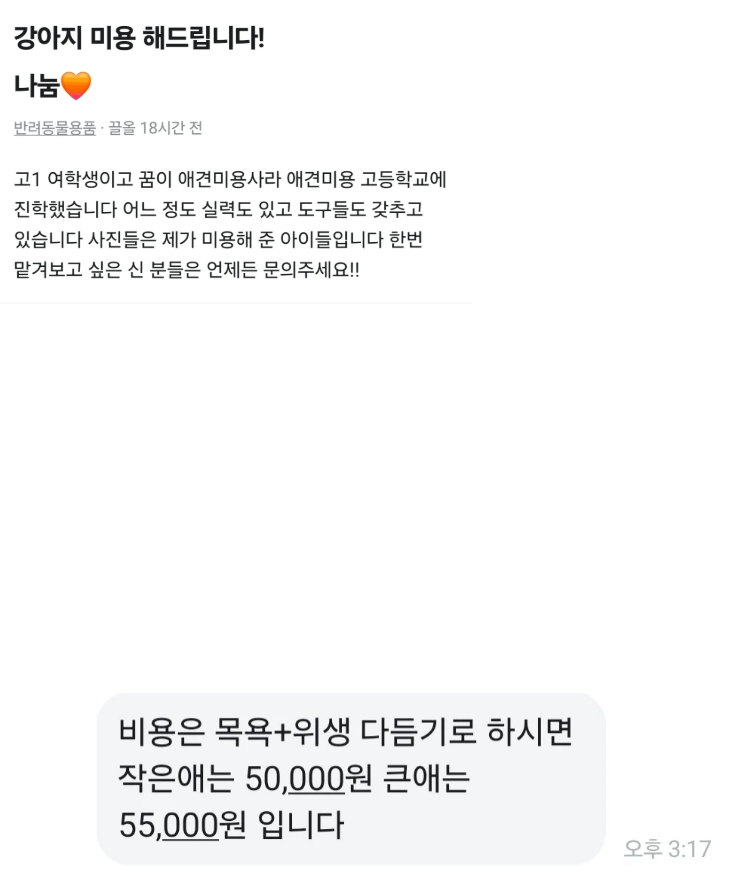

예? 나눔의 뜻을 모르시나

예? 나눔의 뜻을 모르시나
니지갑에있는돈 나눔하라고
미용원래 비용을 몰라서 말을 못 하겠네
한 10만원이 평균시세인데 5만원이면 나눔이긴하니...
하지만 쟤는 실습+용돈벌이가 목적인게 뻔한데 ㅋㅋ
나눔도 아냐ㅋㅋㅋ 개 키워서 안다만
포메같이 이중모로 자라고 물개컷이나 곰돌이 컷같은 특정 컷이 요구되는 애들이 5~8만원으로 좀 비싸게 받고
대형견은 보통 5~6만이고
말티즈같은 조그마한 애들은 3~5만원 수준으로 받는편임
그럼 걍 호갱 찾는거네 ㅋㅋㅋ
뭔소리야 진짜 개 키우는거 맞음? 바리깡으로 빡빡미는거 아니고 가위쓰면 말티즈도 8만시작인디
리트리버처럼 30키로되는 애들은 20~30임
글을 자세히 봐봐. 목욕+위생 다듬기. 위생미용은 싼편이고 애초에 경험도 부족하고 장비도 부족하다는 전제로 봤을때 리트리버 처럼 완전 대형견은 아예 못할것 같고 작은애=소형견, 큰애=중형견 중간급 이하 얘기할 확률이 큼.
그렇지 않고서야 10키로 넘는 묵직한 애들을 쟤가 어떻게 감당하냐.
그 기준으로 봤을때 니가 말하는 대형견들 가격이랑은 시세 자체가 달라요.
나도 포메 5.5~6사이에 자르는데? 걍 동네차이 아님?
니가호구아님?
6~7이면되던데
저게 평균시세
목욕 + 위생 다듬기라는 거 보니까 눈가랑 발, 생식기랑 항문 쪽 털 다듬어주는건데 그거 부분미용으로 2~3만원 정도
목욕이 2~3만원 정도 했던 거로 기억함
걍 정가 그대로 받는것같은데
딱 5만원 정도 함. 정가 받으면서 저러는 거
멍멍이 이발비용이사람보다 비싸네 ㅋㅋㅋㅋ
나눔의 말 뜻을 모름??
그건 싸게해드려요 고 나눔은 공짜로 주거나 공짜로 해주는걸 나눔이라고하는거임
나눔을 달라는뜻
아주 그레이트 씨발련이지 뭐
시발 내가 당한게 다시 올라오네 ㅋㅋㅋㅋㅋㅋㅋㅋㅋㅋㅋㅋㅋㅋㅋㅋㅋㅋㅋㅋㅋ
너임??
ㅇㅇ
41렙 렉카끼리 같이먹고 사는거지
엥 저 돈내고 함?
너희가 나에게 돈을 나눔하라고 ㅋㅋㅋㅋ
당연히 저따위로 하고 돈 받으면 법에 걸립니다ㅋㅋㅋ
ㅇㅇ 그렇다고함 불법이고 미용자격증없어서 ㅋㅋㅋㅋㅋ
자격증인데 없으면 불법이라고?
개 미용도 자격증이 필요하구나 ㄷㄷ
원래 기술로 각잡고 돈 벌려는 행위를 할 땐 대부분 자격증이 있음. 이딴게? 싶은 것도 여러 종류의 자격을 요구함. 식품 같은 경우는 자격증보다 시설 위생이 크지만 어쨌든 자격이 있어야함
국세청: 솔깃솔깃
어이 사업자등록은 했니
그.. 나눠졌나?
고1도 아닐듯 ㅋㅋ 걍 보지 활용 해서 용돈 벌 생각인 듯 ㅋㅋ
우리동네 5kg 기준 5만원인데ㅋㅋㅋ 남의 집 개를 지 실습용 마루타로 쓰고 진짜 미용사만큼 받네
니가 나눔하라고 돈
어리잖어 ㅋㅋㅋ
연습할려고 했는데 생각해보니 이정도는 받을만 하지 않나 싶었나봄
나눔이랍시고 돈요구하면 당근 정지사유 아닌가
두달에 한번 15만원씩 나감
돈도 받고 연습도 하고